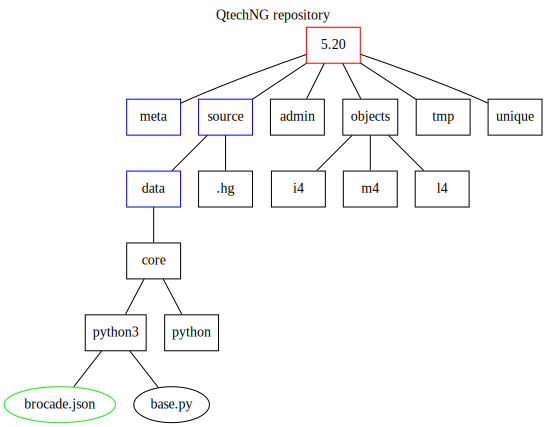

Repository

QtechNG werkt met een software repository. De basis directory waarop dit repository rust, komt - u raadt het al - uit de registry: qtechng-repository-dir: vb. /library/repository
Deze directory - beschikbaar op alle productieservers en ontwikkelservers - wordt door root:db aangemaakt door Ansible met het commando:
export REPO=`delphi key qtechng-repository-dir`
sudo mkdir -p $REPO
sudo chown root $REPO
sudo chgrp db $REPO
sudo chmod 2770 $REPO
Dit maakt dat het setgid bit van de directory wordt gezet: alle bestanden en directories gaan to groep db behoren.
In deze directory worden dan - per release - subfolders aangemaakt die dan de naam van de release dragen.
De release directory heeft een aantal subfolders. In latere posts in deze blog gaan we deze wel nader bekijken.
Nu wil ik vooral beklemtonen dat deze structuur werkt als een eenvoudige databank. Ik wou geen gebruik maken van een bestaand databank product: ofwel zijn deze van de gedaante one-writer/multiple readers (zoals SQLite) ofwel maken ze gebruik van een client-server opstelling.
Ik wou de opzet primitief houden: geen extra onderhoudswerken, geen extra installatieproblemen, geen locks die op de meest vervelende momenten gelockt blijven, maar wel een robuuste opstelling die in alle omstandigheden kan werken. Dit systeem, gebaseerd op eigenschappen van bestanden en directories, heeft ook het voordeel dat het zonder licentie of prijsoverwegingen op andere servers kan worden geplaatst. Hoewel Brocade zelf niet opensource is (in de betekenis dat de software gratis is), wordt de source code op elk productiesysteem in alle openheid geïnstalleerd en bijgewerkt.
Het is niet alleen QtechNG die deze benadering volgt: nagenoeg alle versie controle systemen (Git, Mercurial) ondersteunen deze aanpak. Het QtechNG repository leent overigens nogal wat uit de trukendoos van dergelijke systemen.
De directories met de belangrijke data zijn:
- meta: elementaire meta data omtrent de ontwikkelbestanden
- source: ontwikkelbestanden gegroepeerd in projecten
Uit deze 2, kan de rest van de data worden hersteld.
In volgende blogposts gaan we het belang en de structuur van de verschillende directories uit de doeken doen.